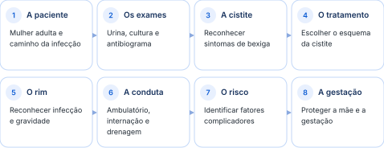
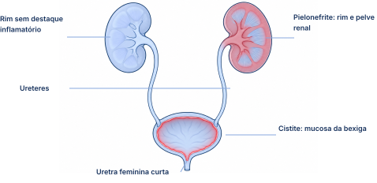
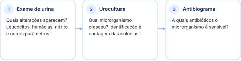
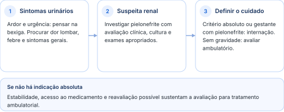
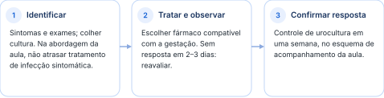

Como reconhecer, investigar e tratar a infecção urinária na mulher adulta e na gestação.
Foco na mulher adulta: sintomas, exames, escolhas de tratamento e situações que exigem mais cuidado. A legenda de leitura está na página 2.

Siga a sequência e use a faixa azul dos capítulos para localizar a etapa atual.
Uma infecção pode ficar na bexiga ou alcançar os rins. Reconhecer onde ela está ajuda a entender os sintomas, a gravidade e o tipo de cuidado necessário.
O foco desta aula é a mulher adulta, com infecção urinária complicada ou não complicada. Crianças, pessoas idosas e homens têm particularidades abordadas em outras áreas. No homem, merece atenção a associação com comprometimento da próstata.

Ilustração didática original; as áreas vermelhas localizam a inflamação. Não representa um exame clínico.
A Escherichia coli vive no intestino e é o agente mais frequente da infecção urinária. A proximidade entre região anal, entrada da vagina e abertura da uretra favorece a colonização ao redor da uretra e a entrada das bactérias na via urinária. A anatomia masculina mantém maior distância entre essas regiões.
A constipação crônica favorece a proliferação de bactérias na região perineal. A baixa ingestão de água e o hábito de adiar a micção reduzem a eliminação frequente de urina e favorecem a permanência dos microrganismos.
A cistite acomete cerca de 11% das mulheres por ano; quase 50% terão ao menos um episódio na vida. A estimativa de capacidade vesical feminina citada foi de 350 a 360 mL, com estímulo a urinar aproximadamente a cada 1h30 a 1h40.
Capacidade vesical e intervalo entre micções variam entre pessoas e com a ingestão de líquidos. Os intervalos citados são orientações da aula, não metas rígidas de diagnóstico.
Referência: avaliação clínica individual.
O exame de urina mostra alterações; a cultura identifica o microrganismo; o antibiograma ajuda a escolher o antibiótico. Cada um responde a uma pergunta diferente.

Três perguntas complementares para o raciocínio clínico.
O exame de urina também é chamado de parcial de urina ou urina tipo I. A leitura reúne aspecto físico, substâncias dissolvidas e elementos do sedimento. Um resultado isolado precisa ser interpretado junto dos sintomas e do contexto clínico.
| Parâmetro | Relação explorada na aula |
|---|---|
| Densidade e cor | Ajudam a observar a concentração da urina e o estado de hidratação. |
| Acidez da urina | O potencial hidrogeniônico apresentado como normal ficou entre 4,5 e 7,5. |
| Proteína | Sua presença levanta a possibilidade de alteração renal, inclusive glomerular. |
| Glicose e cetonas | Glicose pode sugerir alteração do metabolismo da glicose. Cetonas podem aparecer no diabetes e no jejum. |
| Pigmentos biliares e urobilinogênio | Podem contribuir para investigar alterações do fígado e das vias biliares. |
| Nitrito | Pode indicar atividade de bactérias capazes de produzi-lo na urina. |
| Leucócitos | Sugerem inflamação; são interpretados com os demais achados e o quadro clínico. |
| Hemoglobina e hemácias | Apontam para sangue ou pigmento sanguíneo na amostra. |
| Cristais | Participam da avaliação de condições associadas à formação de cálculos. |
Nitrito negativo não exclui infecção urinária: nem todas as bactérias o produzem. Da mesma forma, ausência de glicose ou de proteína na urina não descarta, sozinha, diabetes ou doença renal.
Referência: MedlinePlus; interpretação clínica dos exames.
No exemplo normal, a densidade é compatível com boa hidratação, a acidez está no intervalo citado e não há proteína, glicose, cetonas ou sinais de sangramento. Nitrito e leucócitos não sugerem infecção naquela amostra. O valor do exercício é ler o conjunto, em vez de olhar apenas uma linha do laudo.
A bacterioscopia procura bactérias na amostra. A urocultura verifica o crescimento, identifica o microrganismo e informa sua quantidade. No exemplo negativo, não houve identificação de bactéria nem crescimento na cultura.
No exemplo positivo, cresceu Escherichia coli, com 100.000 unidades formadoras de colônia, valor equivalente a 10 elevado à quinta potência. Esse foi o número destacado para reconhecer bacteriúria significativa no exemplo discutido.
O laudo expressa habitualmente a contagem por mL. O significado depende de sintomas, método de coleta e população: contagens menores também podem ser relevantes. Uma contagem maior, sozinha, não mede a gravidade clínica.
Referência: Associação Europeia de Urologia, infecções urológicas.
O antibiograma testa a resposta do microrganismo a diferentes antibióticos. Uma bactéria polissensível é sensível à maior parte dos fármacos avaliados. Entre as classes citadas estão os aminoglicosídeos, como amicacina e gentamicina, e as cefalosporinas.
O exemplo da cefuroxima mostrou um resultado intermediário para a apresentação endovenosa e sensibilidade para a oral. A mensagem é conferir o medicamento, a apresentação e a via descritos no laudo, sem transferir automaticamente um resultado para outra situação.
Não concluir que a ausência de nitrito elimina a hipótese, nem usar a contagem de colônias como escala isolada de gravidade. Sintomas, sinais sistêmicos e condições da paciente mudam a interpretação.
Ardor para urinar, vontade frequente e desconforto no baixo ventre sugerem infecção na bexiga. A história clínica orienta a hipótese, mas sangue e dor também podem ter outras causas.
A cistite é uma infecção bacteriana aguda da bexiga, também chamada de infecção urinária baixa. Os sintomas podem ser intensos e piorar rapidamente ao longo do mesmo dia. Acomete especialmente mulheres jovens, mas também pode ocorrer ao redor da menopausa.
| Grupo | Como aparece |
|---|---|
| Durante a micção | Disúria: dor ou ardor para urinar. Pode haver hematúria, que é sangue na urina. |
| Frequência e urgência | Polaciúria: urinar muitas vezes. Nictúria: acordar à noite para urinar. Urgência: dificuldade de adiar a micção. |
| Bexiga e pelve | Sensação de esvaziamento incompleto, desconforto suprapúbico e dor pélvica. A sensação de peso pode ser descrita como um “tijolo” no baixo ventre. |
A principal bactéria é a Escherichia coli. Também foram citados Proteus, Enterobacter, Klebsiella, Pseudomonas e Staphylococcus saprophyticus. Conhecer o agente e a sensibilidade torna-se especialmente importante quando o quadro se repete ou a resposta ao tratamento é inadequada.
A lista de agentes é ampla: Pseudomonas e Staphylococcus não pertencem ao mesmo grupo taxonômico das enterobactérias, embora todos possam participar de infecções urinárias.
Referência: classificação microbiológica.
A abordagem apresentada utiliza a história clínica e solicita exame de urina. A professora pede urocultura em todas as mulheres atendidas por infecção urinária, inclusive no primeiro episódio. Essa é uma conduta pessoal explicitamente distinguida das situações em que os protocolos citados tornam a cultura obrigatória.
“Eu faço urocultura em todas as mulheres que me procuram com infecção urinária, mesmo na primeira vez.”
O ultrassom pode ser acrescentado conforme a necessidade. Persistência de sintomas depois de tratar a cistite exige rever o diagnóstico. A cistoscopia, quando indicada, fica para depois da fase aguda.
“Nem toda disúria e hematúria é igual a infecção urinária.”
| Outra hipótese | Por que lembrar |
|---|---|
| Cálculo na bexiga | Pode produzir dor, sangue e ardor ao urinar. |
| Divertículo vesical | Uma alteração da parede da bexiga pode causar desconforto e participar do diagnóstico diferencial. |
| Tumor de bexiga | Pode causar hematúria, dor e desconforto. Sangramento não deve ser atribuído automaticamente à infecção. |
A cistite pode doer muito. Febre, calafrios, dor lombar e repercussão geral mudam o raciocínio e exigem investigar infecção renal ou outra complicação.
O antibiótico trata a infecção da bexiga; medidas para dor e espasmo aliviam o sofrimento. A gestação muda as opções e será tratada em um capítulo próprio.
As opções abaixo reproduzem os esquemas discutidos na aula. A seleção considera o quadro, os resultados microbiológicos quando disponíveis e as características da paciente. As apresentações com dois componentes devem ser lidas na ordem dos nomes dos medicamentos.
| Medicamento | Dose e frequência apresentadas | Duração |
|---|---|---|
| Nitrofurantoína | 100 mg, três vezes ao dia. | 5 dias |
| Sulfametoxazol + trimetoprim | 800 mg + 160 mg, duas vezes ao dia. Nome comercial citado: Bactrim. | 3 dias |
| Fosfomicina | 3 g, em uma tomada. Nome comercial citado: Monuril. | Dose única |
| Amoxicilina + clavulanato | 500 mg + 125 mg por tomada. | 7 dias |
| Cefalosporina de segunda geração | Classe apresentada como alternativa. | 7 dias |
Amoxicilina com clavulanato foi apresentada na dose de 500 mg + 125 mg, diferenciando-a da dose maior empregada na discussão da pielonefrite. Para prescrever, a frequência, a formulação e os ajustes precisam ser conferidos em uma referência apropriada.
O intervalo da nitrofurantoína depende da formulação. A diretriz europeia descreve 100 mg a cada 12 horas para monoidratada/macrocristais e outros intervalos para macrocristais. Conferir função renal e bula.
Referência: Associação Europeia de Urologia, infecções urológicas.
A dose não exige forçar retenção urinária: se houver vontade de urinar, não é necessário segurar a urina durante toda a noite. Seguir as instruções da bula da apresentação utilizada.
Referência: orientação de uso do medicamento.
Antiespasmódicos e analgésicos foram citados como adjuvantes. Anti-inflamatórios aparecem em situações selecionadas. O alívio da dor acompanha o tratamento da infecção e não substitui o antibiótico quando ele está indicado.
Ciprofloxacino e levofloxacino foram retirados do esquema habitual de cistite apresentado. Eles reaparecem entre as opções de pielonefrite. Não transportar o tratamento da infecção renal para uma cistite simples.
A paciente está grávida? Se estiver, não aplicar automaticamente os esquemas desta seção. O capítulo 08 reúne a abordagem específica discutida para a gestação.
Quando a infecção alcança o rim, podem surgir febre, dor nas costas e sintomas gerais. O próximo passo é medir a gravidade, procurar obstrução e decidir se a paciente precisa de internação.
A pielonefrite é a invasão microbiana do parênquima, o tecido funcional do rim, e da pelve renal, parte do sistema coletor. A inflamação aumenta o volume do órgão e pode causar dor na região lombar.
A cápsula fibrosa que envolve diretamente o rim e a fáscia de Gerota são estruturas diferentes. A distensão da cápsula renal participa da dor; a fáscia de Gerota envolve o espaço perirrenal.
Referência: anatomia renal.
Foram apresentadas estimativas de 200 mil hospitalizações por ano nos Estados Unidos, com referência a dados de 2023, e mortalidade ao redor de 10%. A relação citada foi de cinco mulheres para cada homem, e a frequência na gestação, de 1% a 2%.
A mortalidade varia amplamente com a população, a gravidade e a presença de sepse. A estimativa citada não deve ser aplicada a toda paciente com pielonefrite.
Referência: interpretação epidemiológica.
| Manifestação | Como reconhecer |
|---|---|
| Dor lombar | Dor no ângulo costovertebral, a região de encontro entre costelas e coluna. |
| Repercussão geral | Febre e calafrios; náuseas e vômitos podem acompanhar. |
| Sintomas urinários | Disúria e polaciúria podem coexistir com os sintomas renais. |
| Sinal de Giordano | Dor provocada pela percussão cuidadosa da região lombar. |
“Bem gentilzinho com a mão nas costinhas da mulher. Não precisa espancar.”
Febre integra a apresentação clássica enfatizada na aula. Sua ausência, especialmente em apresentações atípicas, não exclui uma infecção renal.
Referência: Associação Europeia de Urologia, infecções urológicas.
A investigação inclui hemograma, ureia, creatinina e marcadores inflamatórios, com destaque para a proteína C reativa. O exame de urina deve vir acompanhado de urocultura e antibiograma na suspeita de pielonefrite.
A imagem procura causas que mudam a conduta. O ultrassom ajuda a avaliar obstrução urinária; a tomografia pode investigar cálculo, abscesso perirrenal e infecção focal. A radiografia simples do abdome também foi mencionada entre os exames possíveis.
A associação de infecção com obstrução pode evoluir rapidamente para sepse urinária e exige avaliação urológica urgente. Não basta escolher outro antibiótico se a drenagem está comprometida.
Na obstrução infectada, sobretudo com sepse, antibiótico e descompressão urgente fazem parte do mesmo atendimento. Não se aguarda a infecção desaparecer para drenar. A retirada definitiva do cálculo costuma ficar para depois do controle da sepse.
Referência: Associação Europeia de Urologia, litíase urinária.
| Situação | Motivo prático |
|---|---|
| Febre persistente ou sinais de sepse | Enchimento capilar lento, frequência cardíaca elevada e respiração acelerada levantam preocupação com repercussão sistêmica. |
| Vômitos persistentes | A paciente pode não conseguir tomar ou manter o antibiótico oral. |
| Obstrução da via urinária | Cálculo, tumor ou outra causa de bloqueio exige cuidado hospitalar e avaliação para drenagem. |
| Diagnóstico incerto | A internação permite investigar outras causas, como doença da vesícula ou processo intestinal. |
| Progressão da infecção | Na abordagem da aula, cistite que evolui para pielonefrite é indicação de internação. |
| Condição | O que ponderar |
|---|---|
| Idade acima de 60 anos | A idade, sozinha, não resume a condição funcional ou a gravidade. |
| Imunossupressão | A intensidade, o tempo e os achados laboratoriais ajudam a decidir. |
| Alteração do trato urinário | Nem toda alteração anatômica implica internação automática. |
| Condições sociais e econômicas | Acesso ao remédio, possibilidade de aplicação injetável e acompanhamento mudam a viabilidade do tratamento fora do hospital. |
| Leucocitose isolada | Leucócitos elevados no hemograma, sem outros sinais, não definem internação; sinais de sepse mudam essa decisão. |

Organização do raciocínio clínico da aula; a gestação tem indicação própria de internação na pielonefrite.
Uma paciente clinicamente estável pode ser avaliada para tratamento ambulatorial, com acesso efetivo à medicação e possibilidade de reavaliação. Esse raciocínio não se aplica à gestante com pielonefrite, para quem a internação foi enfatizada.
A paciente estável pode ter opções fora do hospital; a paciente grave precisa de suporte e tratamento hospitalar. Em ambos os casos, a resposta clínica e o antibiograma orientam a reavaliação.
| Cenário | Antibióticos citados |
|---|---|
| Ambulatório, com estabilidade | Ciprofloxacino ou levofloxacino; sulfametoxazol com trimetoprim; cefalosporinas; amoxicilina com clavulanato; aminoglicosídeos. A ampicilina com sulbactam também foi mencionada entre as possibilidades parenterais. |
| Hospital | Quinolonas endovenosas; aminoglicosídeos; cefalosporinas de segunda ou terceira geração; ampicilina com sulbactam; piperacilina com tazobactam; ampicilina associada a aminoglicosídeo; carbapenêmicos, como imipenem e meropenem. |
Entre as possibilidades de aplicação fora do hospital, foram discutidos ceftriaxona por via intramuscular e aminoglicosídeos por via intramuscular ou endovenosa, desde que exista estrutura para o cuidado. A escolha da via não elimina a necessidade de observar a evolução.
A ceftriaxona é uma cefalosporina de terceira geração. Antibiótico, via e dose dependem de sensibilidade, gravidade, função renal e disponibilidade de acompanhamento. Nitrofurantoína e fosfomicina oral não atingem níveis adequados no tecido renal para tratar pielonefrite.
Referência: Associação Europeia de Urologia, infecções urológicas.
Para a pielonefrite, a amoxicilina com clavulanato foi apresentada como 875 mg + 125 mg, por via oral. Para a cistite, foi discutida a apresentação de 500 mg + 125 mg. Conferir frequência e ajustes na referência de prescrição.
Piperacilina com tazobactam foi citada como preferência habitual da professora no contexto hospitalar. Trata-se de uma preferência de prática, não de uma escolha automática para qualquer paciente.
Diretrizes atuais admitem transição oral mais precoce quando há melhora, tolerância oral e opção eficaz; não exigem sempre 7 dias endovenosos. Duração total depende da situação clínica, do agente e de complicações.
Referência: Sociedade Americana de Doenças Infecciosas, 2025.
Obstrução por cálculo ou tumor pode perpetuar a infecção e se associar a lesão renal aguda. As situações destacadas para intervenção foram obstrução, pionefrose e abscesso renal. Antibiótico e avaliação da necessidade de drenagem devem ser pensados em conjunto.
| Situação | Ideia central |
|---|---|
| Obstrução | Há um obstáculo à passagem de urina; controlar o foco exige avaliar a drenagem. |
| Pionefrose | Infecção purulenta do sistema coletor, geralmente associada à obstrução. É uma complicação que pode exigir drenagem urológica. |
| Abscesso renal ou perirrenal | Coleção localizada de pus no rim ou ao redor dele; a localização e as características orientam o cuidado especializado. |
Pionefrose e abscesso perirrenal não são sinônimos. Pus ao redor do rim indica uma coleção perirrenal; pus no sistema coletor caracteriza pionefrose. Drenagem de uma obstrução infectada é urgente; a cirurgia definitiva da causa é outra etapa.
Referência: anatomia clínica; Associação Europeia de Urologia, litíase urinária.
Não confundir o controle urgente de um sistema infectado e obstruído com a retirada definitiva do cálculo. Adiar a cirurgia definitiva não significa adiar a drenagem necessária.
“Vocês não precisam decorar, mas precisam saber que existe.”
“Não cai a tabela na prova. É só para vocês terem como um apoio.”
O objetivo é reconhecer as possibilidades e saber consultar uma referência apropriada. A seleção de um antibiótico exige mais do que memorizar uma lista de nomes.
A mesma infecção pode ser mais difícil de controlar quando há gestação, doença associada, dispositivo ou obstáculo à saída da urina. Esses fatores mudam a avaliação e o acompanhamento.
A classificação apresentada considera complicada a infecção que ocorre em condições com maior chance de persistência, falha terapêutica ou repercussão sistêmica. Ela reúne características da paciente, do episódio e da via urinária.
Existe algo que favoreça a permanência da bactéria ou dificulte que o tratamento funcione? Um cálculo obstrutivo, um dispositivo e uma alteração funcional exigem atenção além da escolha do antibiótico.
Classificações variam entre diretrizes. Algumas organizam a infecção como localizada ou sistêmica e avaliam fatores de risco separadamente. Esta seção preserva a classificação apresentada na aula.
Referência: Associação Europeia de Urologia, infecções urológicas.
Ter um fator complicador não substitui a avaliação de gravidade. Obstrução infectada e sepse exigem ação urgente; outras condições pedem análise individual de estabilidade, acesso à medicação e seguimento.
Verifique se a urina consegue sair, se há um dispositivo na via urinária e se a função renal piorou. Essas três observações ligam a classificação ao problema que precisa ser resolvido, além da escolha do antibiótico.
Na gravidez, bactérias na urina merecem cuidado mesmo quando não causam sintomas. O tratamento e o controle da resposta ajudam a evitar que a infecção alcance o rim e comprometa a gestação.
Durante a gestação, há aumento do fluxo sanguíneo renal e mudanças de tamanho e dilatação na via urinária. O relaxamento da musculatura do ureter favorece a estase e a ascensão das bactérias da bexiga para a via superior.
A bacteriúria assintomática é a presença de bactérias na urina sem sintomas urinários. A aula enfatiza seu tratamento na gestante para reduzir o risco de progressão à pielonefrite.
A infecção urinária pode afetar a mãe, o feto e a gestação. Foram mencionados prematuridade, baixo peso ao nascer, comprometimento do crescimento e aumento do risco de óbito fetal. A estimativa de mortalidade fetal apresentada foi de duas a quase duas vezes e meia.
O tamanho do risco depende da população, do tipo de infecção e do tratamento. O multiplicador citado na aula não é uma previsão individual para toda gestante com bacteriúria.
Referência: interpretação de risco obstétrico.
Bactérias vistas apenas no exame de urina não confirmam, sozinhas, bacteriúria assintomática: a cultura orienta o diagnóstico. Na paciente sintomática, colher antes do antibiótico quando possível, sem atrasar tratamento necessário.
Referência: Colégio Americano de Obstetras e Ginecologistas, 2023.

Sequência de acompanhamento apresentada, com retorno e cultura de controle.
| Situação | Opções citadas | Observação |
|---|---|---|
| Cistite | Amoxicilina; amoxicilina com clavulanato; cefalexina; cefpodoxima. | Escolher de acordo com sensibilidade e contexto. |
| Pielonefrite | Ampicilina com gentamicina; cefalosporinas injetáveis: cefalotina, cefazolina, cefuroxima e ceftriaxona. | Tratamento hospitalar; avaliar resposta e função renal. |
| Outras opções hospitalares | Meropenem, ertapenem e aztreonam foram citados. | Seleção especializada, conforme gravidade e resistência. |
| Fosfomicina | Reservada, na abordagem da aula, para situações específicas de resistência. | Não foi apresentada como primeira escolha habitual. |
| Nitrofurantoína e sulfametoxazol com trimetoprim | Uso condicionado ao trimestre e às características da gestação. | Não foram apresentadas como primeira escolha na aula. |
A escolha empírica de amoxicilina ou ampicilina requer cautela pela resistência de Escherichia coli. Nitrofurantoína e fosfomicina podem ser opções para infecção baixa na gravidez, conforme contexto; não servem para pielonefrite. Aminoglicosídeos exigem avaliação específica, sem presumir segurança universal.
Referência: Colégio Americano de Obstetras e Ginecologistas, 2023.
A associação da amoxicilina ao clavulanato foi discutida como forma de ampliar a ação contra algumas bactérias. O clavulanato atua sobre mecanismos bacterianos de resistência, permitindo que a amoxicilina mantenha atividade em determinadas situações.
A amoxicilina já tem atividade contra alguns microrganismos Gram-negativos. O clavulanato inibe determinadas beta-lactamases; ele não torna toda bactéria resistente sensível à associação.
Referência: farmacologia dos betalactâmicos.
A orientação da aula é evitar ciprofloxacino e levofloxacino durante a gestação. A justificativa discutida foi a preocupação com efeitos sobre as cartilagens e articulações fetais; há outras classes disponíveis para as situações apropriadas.
O risco articular citado é uma preocupação de segurança, especialmente a partir de dados experimentais; não significa que uma exposição cause inevitavelmente fechamento das cartilagens ou disfunção fetal. A escolha é individualizada pela equipe assistente.
Referência: avaliação de segurança de medicamentos na gestação.
Febre, dor lombar e vômitos pedem reavaliação imediata, sem esperar o prazo de retorno.
As notas roxas distinguem esclarecimentos clínicos do conteúdo da aula. Consulta das diretrizes: 5 de novembro de 2026.
Associação Europeia de Urologia. Diretrizes de infecções urológicas. Diagnóstico, esquemas e classificações.
Associação Europeia de Urologia. Diretrizes de litíase urinária, seção 3.4.2. Obstrução infectada e descompressão.
Sociedade Americana de Doenças Infecciosas. Diretriz de infecção urinária complicada, 2025. Transição oral e duração.
Colégio Americano de Obstetras e Ginecologistas. Infecções urinárias na gestação, 2023. Investigação e antibióticos.
Biblioteca Nacional de Medicina dos Estados Unidos. MedlinePlus: nitritos na urina. Limites da interpretação do nitrito.
Decisões e números na ordem da trilha. A tabela de apoio foi excluída da cobrança pela professora.
01 · Paciente e hábitos. Cistite: 11% ao ano; quase 50% na vida. Capacidade vesical citada: 350–360 mL. Intervalo miccional sugerido: 1h30–1h40. Risco: frequência sexual nos últimos 30 dias e novo parceiro no último ano.
02 · Exames. Acidez citada: 4,5–7,5. Cultura do exemplo: 100.000 unidades formadoras de colônia.
03 · Cistite. Ardor, frequência, urgência, sangue e desconforto suprapúbico. Cultura nos grupos citados. Diferenciais: cálculo, divertículo e tumor.
04 · Antibióticos. Nitrofurantoína: 100 mg, três vezes ao dia, 5 dias, na fala; conferir formulação. Sulfametoxazol + trimetoprim: 800 mg + 160 mg, duas vezes ao dia, 3 dias. Fosfomicina: 3 g, dose única.
04 · Alternativas. Amoxicilina + clavulanato: 500 mg + 125 mg, 7 dias; cefalosporina de segunda geração: 7 dias. Conferir frequências. Quinolonas fora do esquema habitual de cistite ensinado.
05 · Rim e gravidade. Estimativas citadas: 200 mil internações/ano nos Estados Unidos; mortalidade de 10% no dado apresentado; relação 5 mulheres:1 homem; 1–2% das gestantes.
05 · Internação. Sepse, febre persistente, vômitos persistentes, obstrução, incerteza diagnóstica ou progressão, na abordagem da aula. Idade acima de 60 anos é um critério relativo.
06 · Tratamento renal. Amoxicilina + clavulanato: 875 mg + 125 mg citados. Esquema ensinado: 7–14 dias; transição após 7 dias, estabilidade e 48 horas sem febre. Retorno a cada 2 dias.
06–07 · Foco e risco. Obstrução, pionefrose e abscesso exigem avaliar intervenção. Complicadores incluem diabetes, gestação, sintomas acima de 7 dias, dispositivos e disfunção renal.
08 · Gestação. Mortalidade fetal: estimativa citada de 2–2,5 vezes. Reavaliar sem resposta em 2–3 dias; cultura de controle em uma semana. Pielonefrite: internar. Evitar quinolonas.
Nitrito negativo não exclui infecção. Obstrução infectada pode exigir drenagem urgente junto ao antibiótico. Riscos e doses precisam do contexto clínico; os números da aula não são previsões individuais.
Referência: notas clínicas dos capítulos 02, 05 e 08.
Termos em linguagem simples, em ordem alfabética.